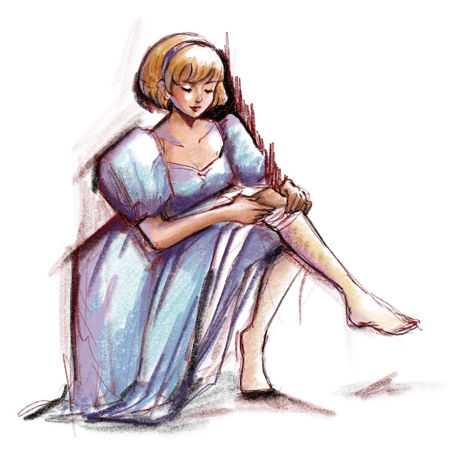

A lady was wearing a creamy cami crop top with indigo high waisted jeans, red ballet flats with sheer ankle socks, holding a bunch of red-orange flowers wrapped by tissue paper with her right hand. She walked into a traditional Parisian coffee shop to ordered a café and sat on the terrace.
The weather was bright, and the sky was clear with a burning sun. Besides, there was some breeze which made the heat bearable to some extent. The clouds were floating in the sky, the sun started shining, and I was wearing stockings. Initially, the weather was dull in the morning, and I thought it would rain and be windy, but my idea was wrong. I was planning to remove them when I arrived at my friend's house.
Suddenly, I remembered my mother had talked about fashion in the past when I was a little girl. She told me how the invention of stockings had changed the world. In the olden time, people wrapped thin strips of animal skin around their legs to cover their legs. After decades, Europeans were the first to start using animal hair to create filaments instead of animal skin, then Egyptians have invented knitted sock. After hundreds of years, woven socks appeared because of the invention of horizontal looms and vertical looms, which allowed manufacturers to warps. They created that typical diamond and chevron pattern of this era.
Afterwards, girls and women all over Europe began to wear various colours of tights with patterns, for instance, stripes. However, none of the church allowed tights because they showed every muscle and tendon of the wearer's legs as socks are mainly for men in the past.
In the 1500s, the knitting machine was invented for knitting stockings. Therefore, factories were able to use cotton, linen, wool or silk for tights. My mom has told me, Queen Elisabeth I wore the first pair of knitted silk stockings globally. After that day, she did not want to wear anything else again. Silk stockings became a symbol of wealth and fashion.
Men started staying away from stockings and breeches to trousers, and it slowly turned into a typically female feature. The beginning of the industrial production of stockings made them widely available to reach the needs of people. Years later, the first man-made fibres stockings appeared, which was made from rayon; the price of stockings decreased as synthetic is much cheaper than silk.
Nylon was born and changed everything. It was the first synthetic fibre, and it combined extraordinary strength with elasticity. Even I was wearing a pair of nylon stockings, if I had chosen the silk one in the morning, I might not feel boiled.
My mother also told me about grandma; she loved wearing tights as well, from the design of lace, fishnet to dark or opaque black; those were the trend at the time.
Stockings led to a massive change in the fashion industry. I have seen many people wearing mini skirts paired with skin colour tights or hosiery in the winter. Even different kinds of printed logos became a huge trend.
Trends alter over time, but history never changes.